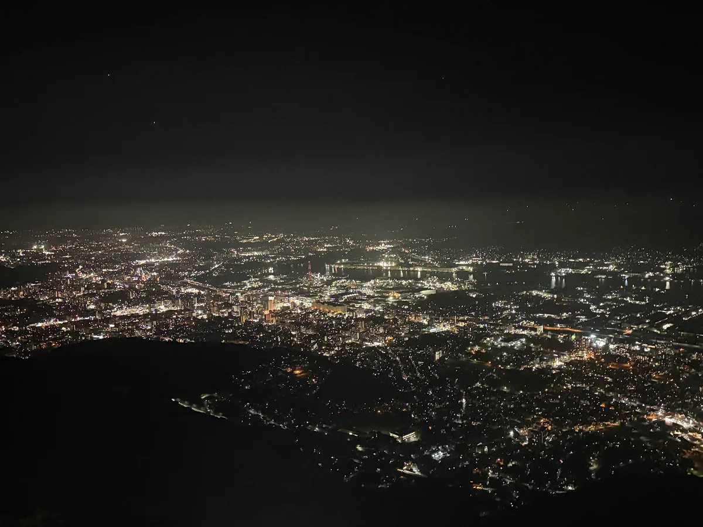

夜景の魅力を大きな写真で伝える。
暗い背景と大きな夜景写真を組み合わせ、街の明かりが印象に残る見せ方を考えました。最初の画面から夜景の雰囲気を感じられる構成です。
WORK 02 / 2026 / WEB DESIGN / CODING
北九州の夜景スポットを紹介するWebサイト。

Night Kitakyu THE NIGHTSCAPES OF KITAKYUSHU北九州の夜景の魅力を、写真とスポット紹介を通して伝えるサイトです。皿倉山・高塔山・和布刈・足立公園など、気になる場所を選んで詳しく見られる構成にしました。
北九州の夜景スポットを探している人や、ドライブの行き先を考えている人を想定しています。
暗い背景と大きな夜景写真を組み合わせ、街の明かりが印象に残る見せ方を考えました。最初の画面から夜景の雰囲気を感じられる構成です。
トップから各スポットの詳細へ移動できるようにし、ナビゲーションからも場所を選べる構成にしました。Figmaでデザインを考え、HTML・CSSで実装しました。